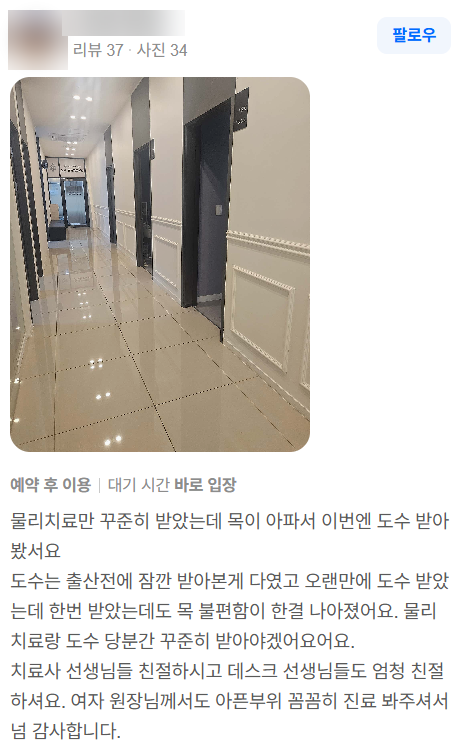
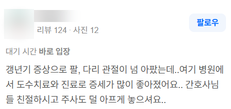
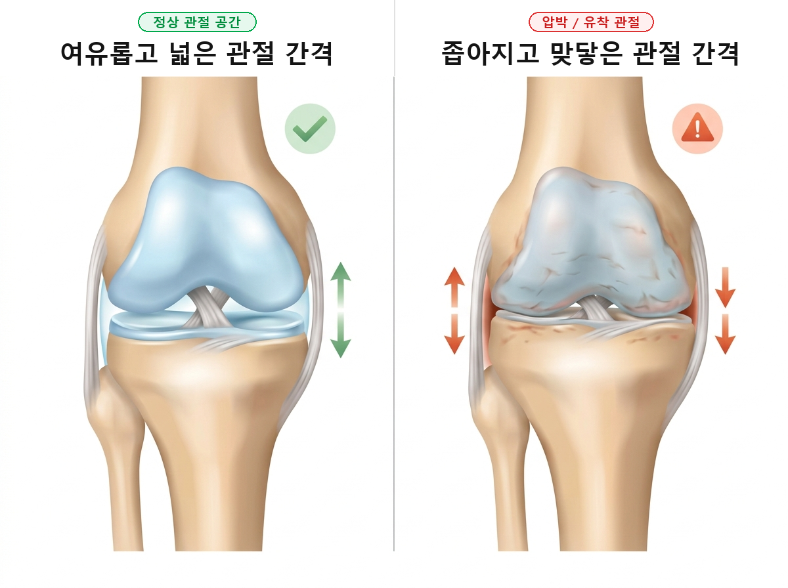
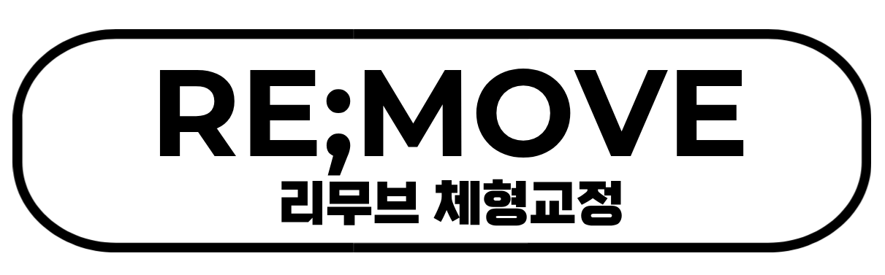
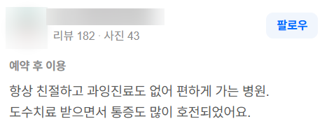

안녕하세요.
물리치료사 출신 체형교정 전문가, 리무브 체형교정 센터장입니다.

지난 글(1부)에서는 통증 부위는 억울한 '피해자(결과)'일 뿐 진짜 숨어있는 '가해자(원인)'를 찾아야 한다는 이야기, 그리고 "평소 자세는 신경 쓰지 말고 자기 전 5분 운동만 챙기라"는 바른 정렬의 법칙을 말씀드렸습니다.
(혹시 아직 1부를 못 보셨더라도 오늘 글을 읽고 이해하시는 데는 전혀 무리 없습니다ㅎㅎ)
오늘은 지난 편에 이어,
"병원 시절 환자분들이 굳이 저에게 도수치료를 받으려고 했던 이유" 중
나머지 이야기들을 실제 리뷰와 함께 솔직 담백하게 들려드리려 합니다.
💡 3. "기계 물리치료만 받다 수기 교정을 받았는데, 단 한 번 만에 목이 돌아갔어요"

출산 후 육아로 목과 어깨가 완전히 굳어버렸던 분의 실제 리뷰입니다.
목이 결리고 뻐근할 때, 병원에 가서 핫팩 대고 찌릿찌릿 전기 물리치료만 몇 주씩 받고 계신 분들 정말 많으실 겁니다.
"선생님, 저 물리치료 한 달 내내 매일 다녔는데 효과가 없어요..."
(저는 속으로 생각합니다... '기계가 틀어진 목뼈를 맞춰주지는 못하니까요...ㅠㅠ')
물론 따뜻한 온열 찜질이나 전기 자극도 일시적으로 혈액순환을 돕고 겉 근육을 달래는 데는 도움이 됩니다.
하지만,
틀어진 뼈의 정렬과 깊숙히 굳어진 근육들은 단순 물리치료로는 쉽게 해결되지 않더라구요.
(제 직업이 없어져도되니 그런게 나와줬으면... ㅠㅠ)
특히 출산 후에는 관절을 이어주는 인대가 호르몬(릴랙신) 영향으로 느슨해진 상태에서, 하루 종일 무거운 아기를 안고 수유하다 보니 목, 등, 어깨의 중심축이 틀어지게 됩니다.
이 상태에서 겉에 따뜻한 찜질만 해준다고 틀어진 경추(목뼈) 정렬과 그걸 더 틀어지지 않으려고 버텼던 근육들이 알아서 풀어질까요?
어림도 없습니다...
이때는 단순 온찜질이 아니라,
느슨해진 관절은 안정화하고, 과긴장되어 굳어버린 근육을 정밀하게 이완하는 도수테크닉이 들어가야 합니다.
원인을 제대로 짚어 교정하면, 단 한 번의 관리만으로도
"어? 선생님, 굳어서 안 돌아가던 목이 쑥 돌아가요..."
하는 놀라운 가벼움을 즉각 체감하시게 됩니다.
(놀라서 박수를 치더라도 같이 호응 못해드립니다... 너무 자주있는일이라...)

💡 4. "갱년기 증상으로 온몸 관절이 아팠는데, 증세가 정말 많이 좋아졌어요"

50대 전후 고객님들께서 찾아오실 때 가장 많이 털어놓으시는 단골 고민입니다.
갱년기가 찾아오면 여성호르몬 변화로 인해 전신의 인대와 관절막이 건조해지고 뻣뻣하게 굳어갑니다.
아침에 눈뜰 때마다 손가락 마디마디가 뻣뻣하고, 어깨는 삐걱거리고, 팔꿈치와 무릎까지 온몸 관절이 쑤시죠.
대부분의 분들이
"에휴... 나이 들어서 그런 거겠지..."
하시며 매일 아침 파스 붙이고 진통제로 하루하루를 버티십니다. (듣고 있으면 참 마음이 짠합니다ㅠㅠ)
그런데 여러분, 나이가 들었다고 해서 무조건 굳어지는 걸까요?
절대 그렇지 않습니다.
나이가 들어서 굳는 게 아니라, 혈액순환이 줄어 관절액이 부족해지기 때문에
관절 사이가 가까워졌기 때문입니다.

오래되어 기름칠 안 된 문 경첩을 억지로 열려고 하면 끼이익 소리가 나듯,
굳어버린 관절을 무작정 힘으로 꺾거나 세게 풀어주려고만 하면 오히려 더 붓고 아픕니다.
이 때는 관절 모양에 따라 잘 움직이도록 유도해야하고, 그런 움직임을 본인의 근육이 실행할 수 있도록 학습시켜야합니다.
그렇게 되면 자연히 혈액순환도 증가하고, 관절액도 늘며, 관절 사이가 벌어지게 됩니다.
"어머 선생님, 팔이 번쩍 들리고 무릎이 훨씬 가벼워요!"
라며 활짝 웃으시는 모습을 보게 됩니다.

🌿 "불편함을 Remove, 내 몸을 Re-move"

"불편함을 Remove, 내 몸을 Re-move"
오랜 시간 여러분을 괴롭혀온 틀어짐과 만성 불편감은 깨끗하게 제거(Remove)하고,
굳어버린 신체에 본래의 바르고 자유로운 움직임을 다시(Re-move) 선물해 드립니다.
'리무브 체형교정'은 병원 제도의 시간적 타협을 거부하고,
고객님과 함께하는 매 1분 1초가 결코 무의미하지 않도록 1:1로 온 정성을 다합니다.

- 겉만 만지는 의미 없는 단순 마사지에 지치셨거나
- 여기저기 다녀봐도 그때뿐이고 항상 제자리였거나
- 과잉 권유 없이 내 몸을 진심으로 믿고 맡길 진짜 전문가를 찾고 계시다면
언제든 편안하게 리무브의 문을 두드려 주세요.
"우리 동네에 이런 든든한 전문가가 있어 정말 다행이다"라는 안도감을,
고객님의 가벼워진 몸으로 직접 증명해 드리겠습니다.

긴 글 읽어주셔서 진심으로 감사합니다.
[리무브 체형교정 찾아오시는 길]
📍 경기 구리시 갈매순환로 154 갈매현대테라타워 S동 L104호
💬 문의/예약: 네이버 톡톡 또는 댓글로 편하게 남겨주세요.
#리무브체형교정 #구리체형교정 #갈매체형교정 #물리치료사출신 #체형교정센터 #출산후체형교정 #거북목교정 #오십견 #갱년기통증 #재활운동 #체형관리 #도수치료후기